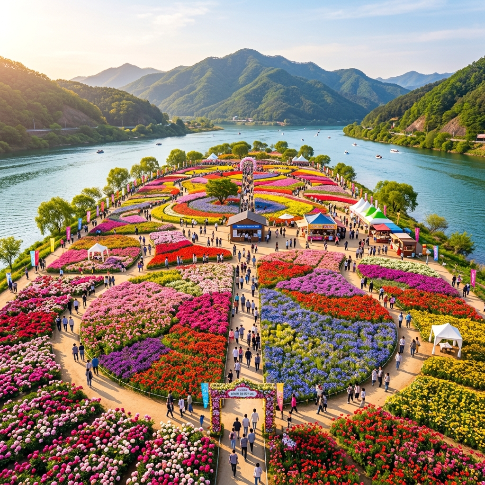
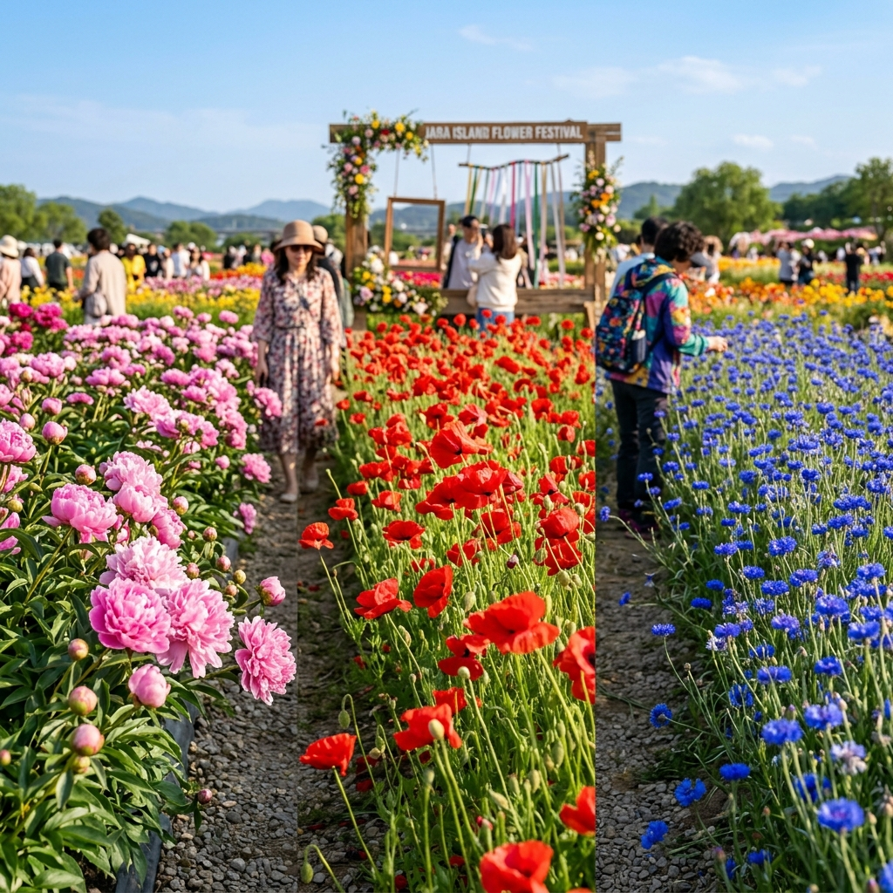
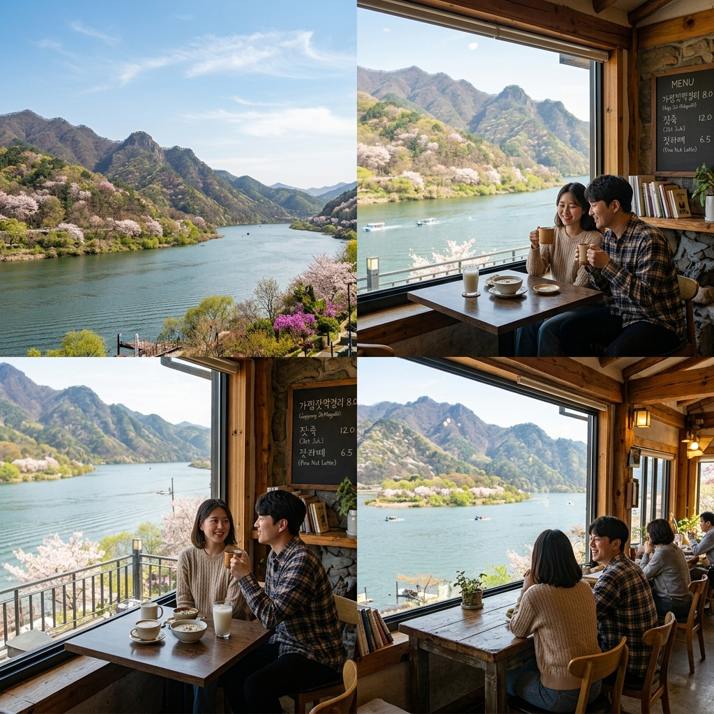

경기도 가평 자라섬에서 봄꽃 행사가 열립니다.
북한강 수면 위에 떠 있는 이 작은 섬이 매년 5월 말이면 10만㎡ 규모의 색색 꽃밭으로 변신해 수많은 방문객을 끌어모읍니다.
올해 행사는 2026년 5월 23일(토)부터 6월 14일(일)까지 이어지며, 입장료 환급 프로그램 덕분에 사실상 무료로 즐길 수 있는 구조입니다.
가평역에서 도보 10분 거리라 대중교통 방문도 매우 편리합니다.
| 구분 | 내용 |
|---|---|
| 행사 기간 | 2026.05.23(토) ~ 06.14(일) |
| 위치 | 경기도 가평군 가평읍 자라섬 |
| 규모 | 10만㎡ 봄꽃밭 |
| 운영 시간 | 09:00 ~ 18:00 (현장 확인 권장) |
가평 자라섬은 평소에는 캠핑장과 재즈 페스티벌 무대로 유명한 북한강 위의 섬입니다.
그런데 봄 축제 기간에는 섬 서쪽 광활한 평지에 10만㎡에 달하는 봄꽃밭이 조성되어 완전히 다른 얼굴을 보여 줍니다.
작약, 꽃양귀비, 수레국화, 비올라 등 초여름 꽃 수십 종이 한꺼번에 피어나 색깔별로 구역이 나뉜 꽃 지도를 걸으며 감상하는 재미가 있습니다.
섬 전체가 평지라 유모차나 휠체어를 이용하는 방문자도 불편 없이 관람할 수 있다는 점이 큰 장점입니다.
북한강을 바라보며 꽃밭 사이를 거니는 경험은 일상 속 짧은 여행으로 충분한 힐링이 됩니다.

자라섬 꽃밭은 심겨진 품종별로 구역이 나뉘어 각각의 특색이 뚜렷합니다.
작약 구역은 탐스럽고 풍성한 분홍색·흰색 꽃들이 영국식 정원 느낌을 연출하며, 고급스러운 화보 스타일 사진 촬영에 인기입니다.
꽃양귀비 구역은 선명한 주홍빛과 분홍빛 꽃이 바람에 살랑이는 모습이 생동감 넘치고, 역광에서 꽃잎이 반투명하게 빛납니다.
수레국화 구역은 시원한 코발트 블루 꽃들이 모여 있어 다른 구역과 대비되는 청량감을 줍니다.
꽃밭 중앙부 포토프레임 조형물은 항상 인기 포토존이어서 이른 오전 방문이라면 대기 없이 촬영할 수 있습니다.
2026년 자라섬 꽃 페스타는 5월 23일 토요일 개막해 6월 14일 일요일 폐막합니다. 총 23일간의 여정입니다.
행사장 이용 시간은 오전 9시부터 오후 6시까지이며 현장에서 재확인을 권장합니다.
개막 첫 주말인 5월 23~24일은 초기 방문 열기로 인해 특히 붐빌 수 있습니다.
공식 부대 행사(공연, 체험 코너)는 주말에 집중 운영되며 평일에는 한결 조용합니다.
야간 조명 이벤트가 일부 기간에 열릴 수 있으니 자라섬 꽃 페스타 공식 채널에서 최신 정보를 확인하세요.
자라섬 꽃 페스타는 입장료가 있지만 현장 내 특정 상업 시설 이용 금액과 연계해 환급해 주는 프로그램이 운영됩니다.
환급 방식은 보통 공식 운영 부스에서 음식이나 음료를 구매한 영수증을 안내 데스크에 제출하면 입장료에서 차감하거나 현금으로 돌려주는 형태입니다.
영수증은 당일 발급 분만 유효한 경우가 많으므로, 꽃밭 관람 전 먹거리를 구매하고 바로 환급 절차를 밟는 것이 편리합니다.
환급 조건과 한도는 연도마다 바뀔 수 있으니 현장 안내문과 공식 홈페이지에서 최신 내용을 확인하세요.
이 혜택을 활용하면 사실상 입장료 부담 없이 꽃밭을 즐길 수 있어 가성비 나들이로 인기를 모읍니다.
자라섬의 가장 큰 장점 중 하나는 경춘선 가평역에서 도보 10분이면 닿는다는 접근성입니다.
서울 청량리역에서 ITX 청춘 열차를 타면 가평역까지 약 1시간, 경춘선 전철로는 상봉역에서 1시간 내외입니다.
자가용 이용 시 서울양양고속도로 가평 IC로 빠져나와 자라섬 방향으로 5분이면 도착합니다.
주말 주차장은 혼잡하므로 오전 9시 전 도착을 권장합니다.
가평역 앞에서 축제 기간 무료 셔틀버스가 운행될 수 있으니 사전 공지를 확인하세요.

자라섬 전체를 한 바퀴 돌아보는 순환 코스는 약 3~4km로, 사진을 찍으며 여유롭게 걸으면 2시간 안팎이 소요됩니다.
추천 동선: 입구 → 작약 구역 → 꽃양귀비 구역 → 수레국화 구역 → 강변 데크 → 숲길 → 포토프레임 조형물 → 입구 복귀
강변 데크에서는 북한강 너머 명지산과 호명산 능선이 파노라마로 펼쳐져 꽃과 강경 사진을 한 번에 담을 수 있습니다.
섬 북쪽 숲길은 그늘이 많아 더운 날에도 시원하게 걸을 수 있습니다.
전체 관람이 끝나면 입구 쪽 먹거리 부스에서 간식을 즐기며 쉬는 것이 보편적인 방문 패턴입니다.
자라섬에서 꽃 구경을 마친 후 가평 시내와 주변 명소로 이동하면 더욱 알찬 하루가 됩니다.
남이섬은 자라섬에서 뱃길로 10분 거리로, 두 섬을 함께 방문하는 반나절~하루 코스가 인기입니다.
아침고요수목원은 자라섬에서 차로 약 20분 거리에 있으며, 시즌별 꽃 테마 정원으로 유명합니다.
가평 잣은 전국 생산량의 80% 이상을 차지하는 특산물로, 시내에서 잣막걸리나 잣죽을 꼭 맛보시기 바랍니다.
가평역 인근 닭갈비 골목에서 숯불 닭갈비로 마무리하는 것이 이 지역 나들이의 정석 코스입니다.
자라섬 행사장 내 먹거리 부스에서 다양한 간식류를 즐길 수 있습니다.
분식부터 가평 잣 제품까지 폭넓게 판매되며, 1만 원 내외로 간단한 한 끼를 해결하기 좋습니다.
북한강 변 카페들은 강 전망이 일품으로, 꽃밭 구경 후 음료 한 잔 하기에 딱입니다.
가평역 인근에는 닭갈비 전문점이 즐비하므로 오후에 여유롭게 들르면 됩니다.
잣막걸리 삼겹살은 지역 특색이 가장 잘 담긴 조합으로, 가평 방문 시 꼭 한 번 경험해 보시길 추천합니다.

Q. 자라섬은 섬인데 배를 타야 하나요?
아니요, 자라섬은 다리로 연결되어 있어 차량과 도보 모두 자유롭게 진입할 수 있습니다.
주차장이 따로 마련되어 있으며, 자라섬 북측 공영 주차장을 이용하면 됩니다.
Q. 꽃밭 안으로 들어가 사진 찍을 수 있나요?
꽃밭 내부 진입이나 꽃 훼손은 금지되어 있습니다.
관람로를 따라 이동하면서 감상과 사진 촬영만 허용되며, 특히 양귀비와 유채꽃 군락은 울타리 안쪽 진입이 엄격히 제한됩니다.
망원 렌즈나 스마트폰 줌을 활용하면 울타리 밖에서도 꽃밭을 꽉 채운 구도의 사진을 찍을 수 있습니다.
Q. 자라섬 근처에서 하룻밤 묵을 곳이 있나요?
가평읍 시내에 다양한 숙박 시설이 밀집해 있으며, 자라섬 캠핑장도 축제 기간 중 일부 구역이 운영됩니다.
캠핑장 예약은 별도 플랫폼에서 진행되므로 방문 전에 미리 확인하세요.
주말 숙박은 꽃 페스타 기간 중 빠르게 마감되므로 최소 1~2주 전 예약이 필수입니다.